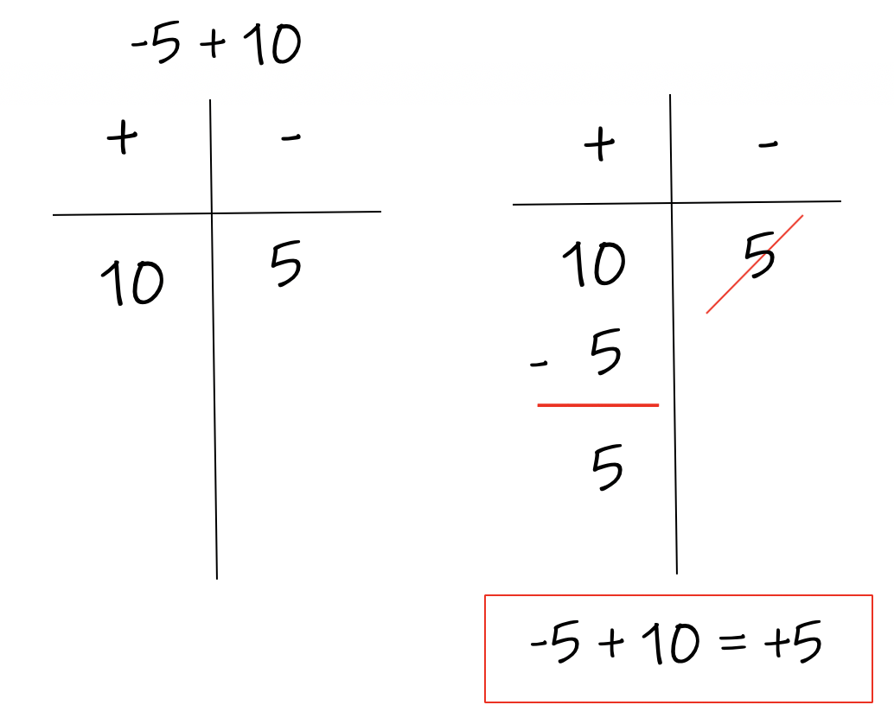
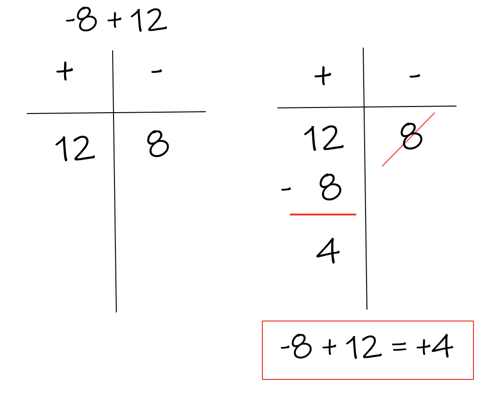
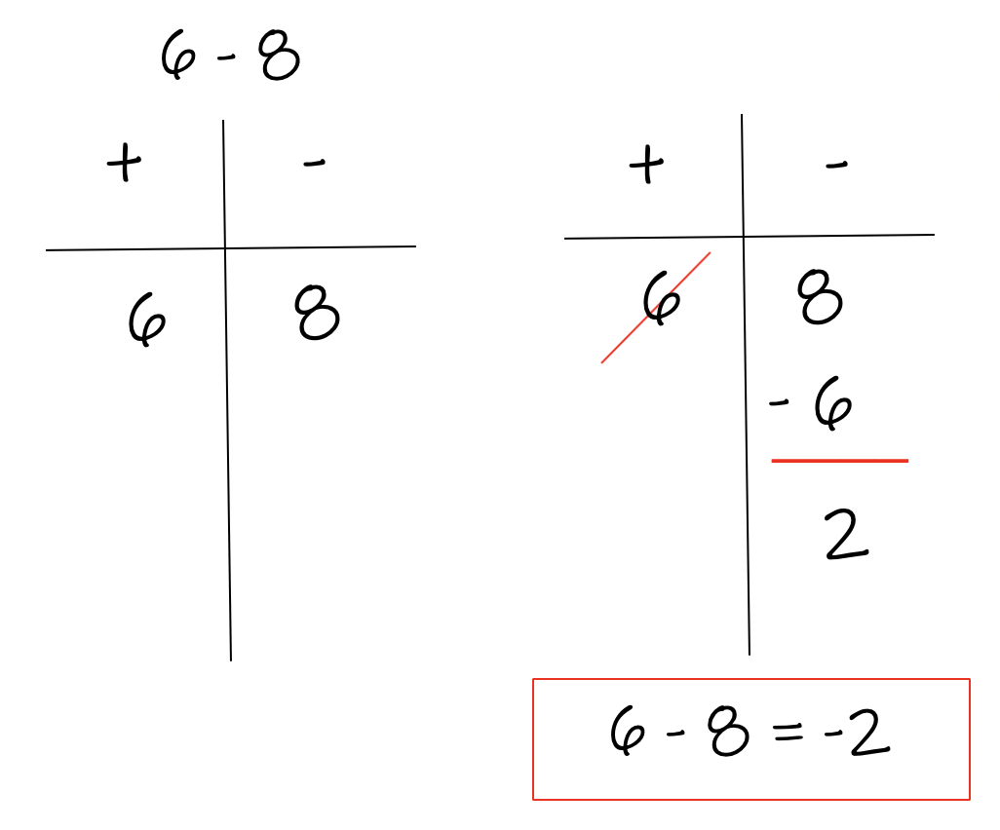
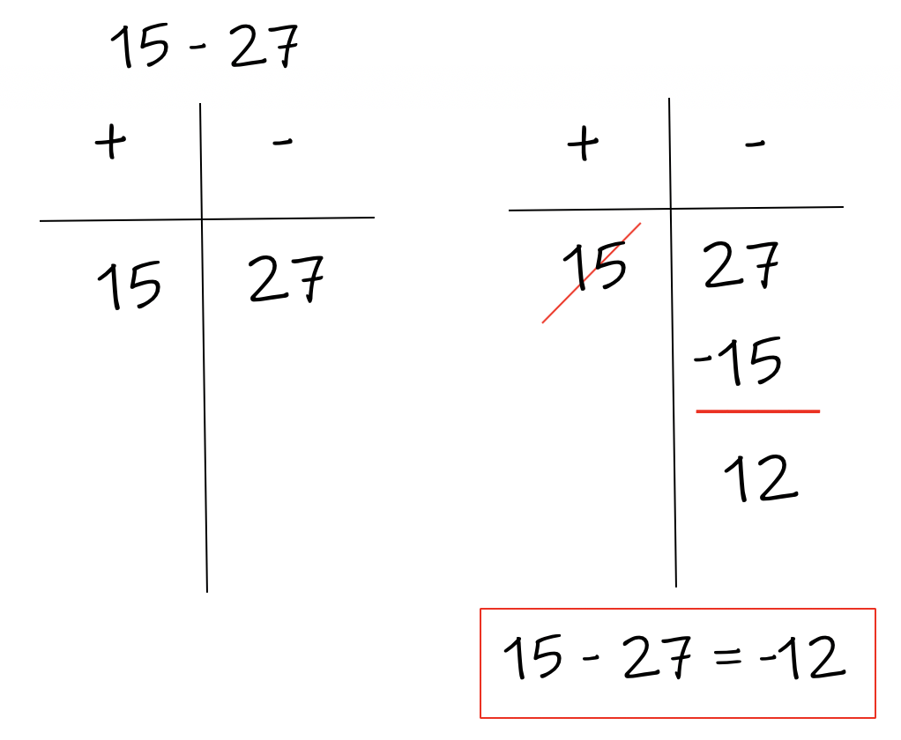
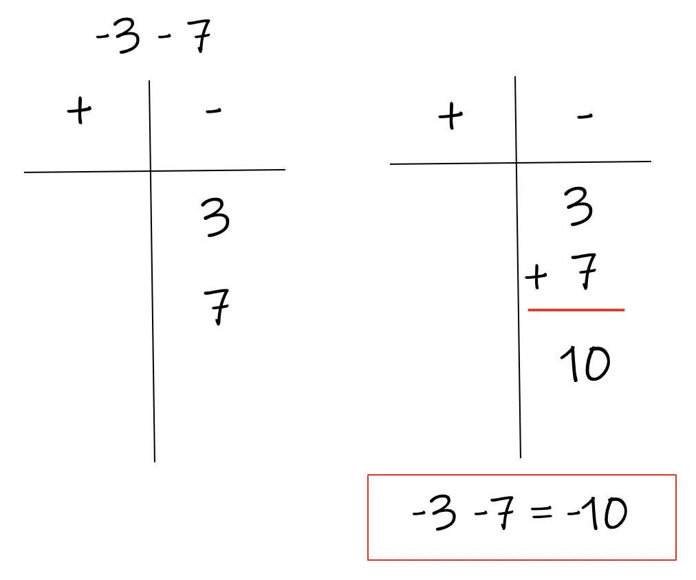
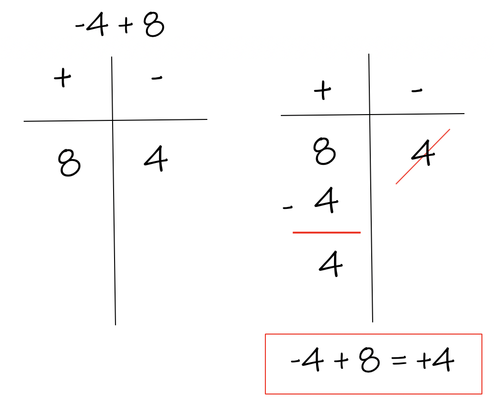
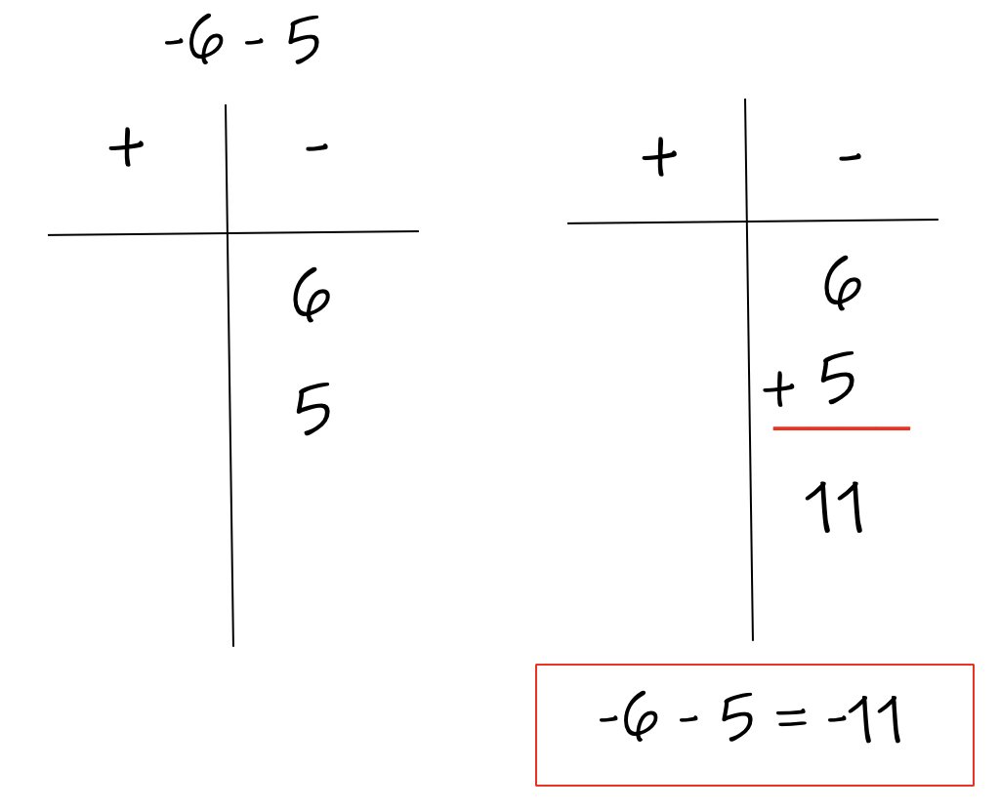
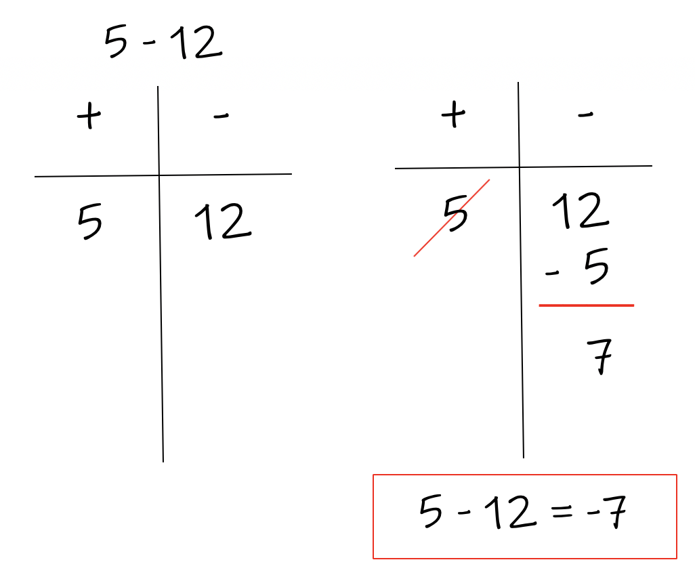
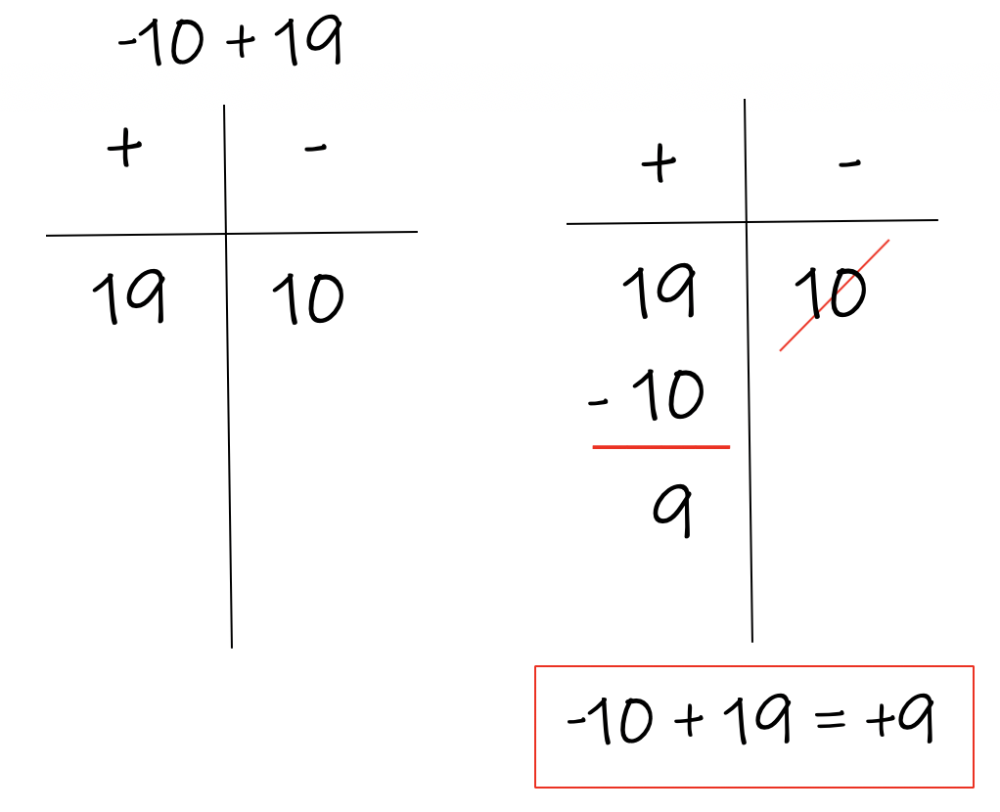
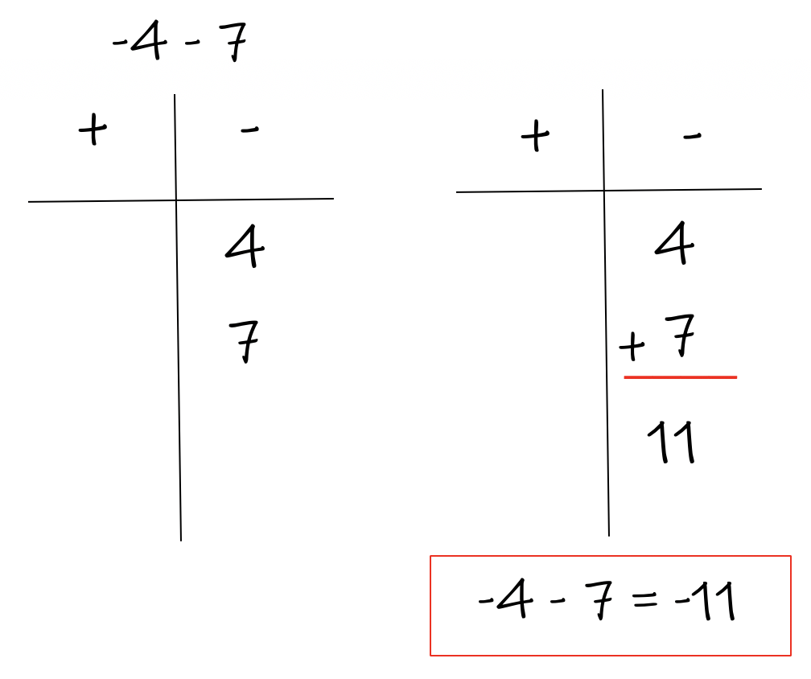

In math, an integer is defined as any positive or negative whole number. An integer is never a fraction or decimal. Example of Integers: ... -3, -2, -1, 0, 1, 2, 3, ... etc.
When adding or subtracting positive and negative numbers, you must determine if the answer is positive or negative. This is sometimes very hard for students.
A symbol called a T-Chart was created to give you a way to always get the right answer. It works with all addition and subtraction problems.
A T-chart has two columns, one positive and one negative. Write each number in the column that matches your number's sign. Write any positive numbers in the + column. Write any negative numbers into the - column.
DO NOT put a negative sign infront of negative numbers when you fill them into the column. Leave off the negative sign ALWAYS.
Rule #1:
If both numbers are in the same column, add them together, then put the sign of the column infront of your answer. If both numbers are in the negative column, the answer is negative. If both numbers are in the positive column, the answer is positive.
Rule #2:
If both numbers are in different columns, move the smaller number to the bigger number and subtract them. Keep the sign at the top of the column that you did the calculation in. If the work was done in the positive column, your answer is positive. If the work you did was in the negative column, put a negative sign in front of the answer.
Let's look at some examples:
         